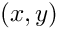
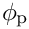
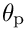
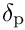
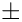

celprm Struct Reference
Celestial transformation parameters. More...
#include <cel.h>
Data Fields | |
| int | flag |
| int | offset |
| double | phi0 |
| double | theta0 |
| double | ref [4] |
| struct prjprm | prj |
| double | euler [5] |
| int | latpreq |
| int | isolat |
| struct wcserr * | err |
| void * | padding |
Detailed Description
Celestial transformation parameters.
The celprm struct contains information required to transform celestial coordinates. It consists of certain members that must be set by the user (given) and others that are set by the WCSLIB routines (returned). Some of the latter are supplied for informational purposes and others are for internal use only.
Returned celprm struct members must not be modified by the user.
Field Documentation
◆ flag
| int celprm::flag |
(Given and returned) This flag must be set to zero (or 1, see celset()) whenever any of the following celprm struct members are set or changed:
This signals the initialization routine, celset(), to recompute the returned members of the celprm struct. celset() will reset flag to indicate that this has been done.
◆ offset
| int celprm::offset |
(Given) If true (non-zero), an offset will be applied to 
◆ phi0
| double celprm::phi0 |
(Given) The native longitude,
◆ theta0
| double celprm::theta0 |
(Given) ... the native latitude,
◆ ref
| double celprm::ref[4] |
(Given) The first pair of values should be set to the celestial longitude and latitude of the fiducial point [deg] - typically right ascension and declination. These are given by the CRVALia keywords in FITS.
(Given and returned) The second pair of values are the native longitude,   
LONPOLEa defaults to

The returned value, celprm::latpreq, specifies how LATPOLEa was actually used.
◆ prj
| struct prjprm celprm::prj |
(Given and returned) Projection parameters described in the prologue to prj.h.
◆ euler
| double celprm::euler[5] |
(Returned) Euler angles and associated intermediaries derived from the coordinate reference values. The first three values are the
◆ latpreq
| int celprm::latpreq |
(Returned) For informational purposes, this indicates how the LATPOLEa keyword was used
-
0: Not required,
-
1: Required to select between two valid solutions of
-
2:
◆ isolat
| int celprm::isolat |
(Returned) True if the spherical rotation preserves the magnitude of the latitude, which occurs iff the axes of the native and celestial coordinates are coincident. It signals an opportunity to cache intermediate calculations common to all elements in a vector computation.
◆ err
| struct wcserr* celprm::err |
(Returned) If enabled, when an error status is returned, this struct contains detailed information about the error, see wcserr_enable().
◆ padding
| void* celprm::padding |
(An unused variable inserted for alignment purposes only.)
Generated on for WCSLIB by